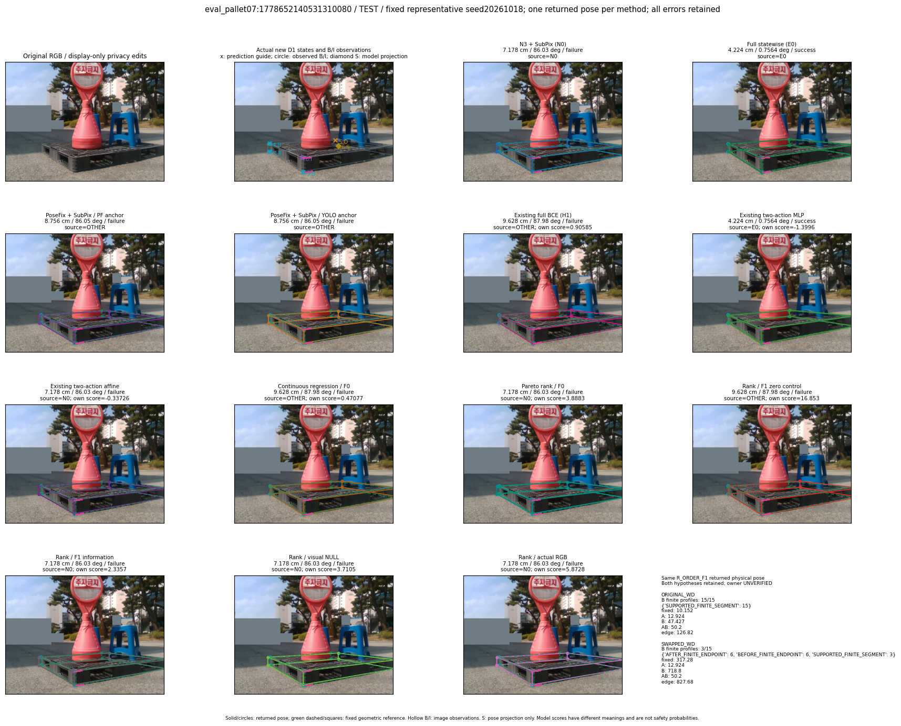
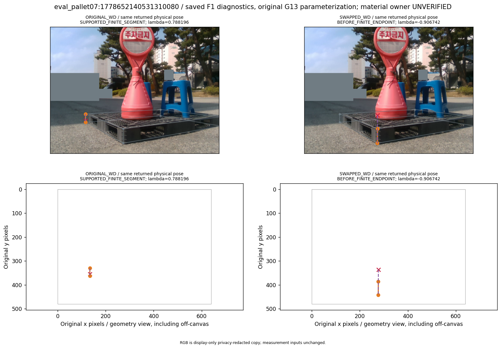
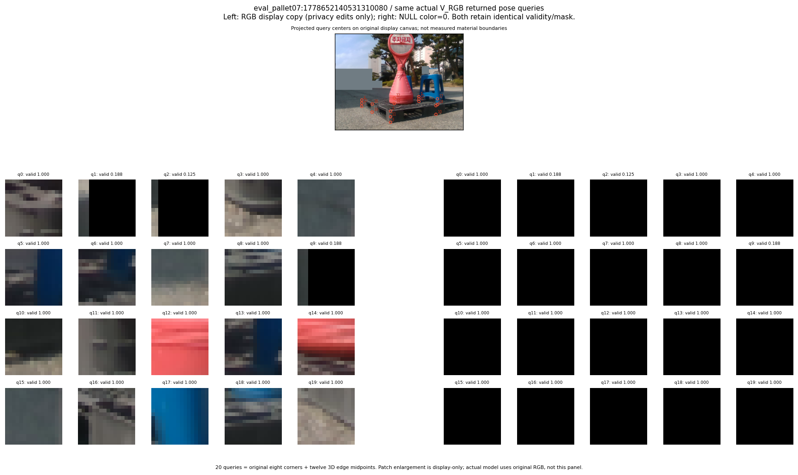

R_CONT_F0_s20261018:binary_damage
thumbnail detail support visual



실선은 반환 자세, 초록 점선은 고정 기하 참조입니다. S는 영상 관측이 아닙니다. 점수는 모델별 의미가 다르며 보정된 안전 확률이 아닙니다. 개인정보 처리는 표시 사본에만 적용했습니다.
| 방법·seed | 위치 / 회전 / 공동성공 | 실제 출처 | 선택 후보 | 각 모델 자체 점수 |
|---|---|---|---|---|
| N0 | 7.178 cm / 86.03 deg / failure | N0 | N/A | N/A |
| E0 | 4.224 cm / 0.7564 deg / success | E0 | N/A | N/A |
| E0_REGENERATED | 4.224 cm / 0.7564 deg / success | E0 | E0_REGENERATED | N/A |
| POSEFIX_SUBPIX_PF_ANCHOR | 8.756 cm / 86.05 deg / failure | OTHER | N/A | N/A |
| POSEFIX_SUBPIX_YOLO_ANCHOR | 8.756 cm / 86.05 deg / failure | OTHER | N/A | N/A |
| D1_H1_MLP_s20261018 | 9.628 cm / 87.98 deg / failure | OTHER | G13/ORIGINAL_WD/selected | 0.9058489799499512 |
| D1_H1_MLP_s20261019 | 9.628 cm / 87.98 deg / failure | OTHER | G13/ORIGINAL_WD/selected | 0.6301814317703247 |
| D1_H1_MLP_s20261020 | 9.628 cm / 87.98 deg / failure | OTHER | G13/ORIGINAL_WD/selected | 0.9302525520324707 |
| D1_H1_PAIR_MLP_s20261018 | 4.224 cm / 0.7564 deg / success | E0 | E0_REGENERATED | -1.3996169567108154 |
| D1_H1_PAIR_MLP_s20261019 | 4.224 cm / 0.7564 deg / success | E0 | E0_REGENERATED | -1.2939273118972778 |
| D1_H1_PAIR_MLP_s20261020 | 4.224 cm / 0.7564 deg / success | E0 | E0_REGENERATED | -1.3706480264663696 |
| D1_H1_PAIR_ROLE_AFFINE_s20261018 | 7.178 cm / 86.03 deg / failure | N0 | N0 | -0.33726319670677185 |
| D1_H1_PAIR_ROLE_AFFINE_s20261019 | 7.178 cm / 86.03 deg / failure | N0 | N0 | -0.7810056805610657 |
| D1_H1_PAIR_ROLE_AFFINE_s20261020 | 7.178 cm / 86.03 deg / failure | N0 | N0 | -0.4273068308830261 |
| R_CONT_F0_s20261018 | 9.628 cm / 87.98 deg / failure | OTHER | G13/ORIGINAL_WD/selected | 0.4707690477371216 |
| R_CONT_F0_s20261019 | 9.628 cm / 87.98 deg / failure | OTHER | G13/ORIGINAL_WD/selected | 0.5148470997810364 |
| R_CONT_F0_s20261020 | 9.628 cm / 87.98 deg / failure | OTHER | G13/ORIGINAL_WD/selected | 0.539198637008667 |
| R_ORDER_F0_s20261018 | 7.178 cm / 86.03 deg / failure | N0 | N0 | 3.8882784843444824 |
| R_ORDER_F0_s20261019 | 9.628 cm / 87.98 deg / failure | OTHER | G13/ORIGINAL_WD/selected | 5.8227009773254395 |
| R_ORDER_F0_s20261020 | 9.628 cm / 87.98 deg / failure | OTHER | G13/ORIGINAL_WD/selected | -2.1450355052948 |
| R_ORDER_F1_ZERO_s20261018 | 9.628 cm / 87.98 deg / failure | OTHER | G13/ORIGINAL_WD/selected | 16.85301971435547 |
| R_ORDER_F1_ZERO_s20261019 | 9.628 cm / 87.98 deg / failure | OTHER | G13/ORIGINAL_WD/selected | 9.659761428833008 |
| R_ORDER_F1_ZERO_s20261020 | 9.628 cm / 87.98 deg / failure | OTHER | G13/ORIGINAL_WD/selected | 11.476558685302734 |
| R_ORDER_F1_s20261018 | 7.178 cm / 86.03 deg / failure | N0 | N0 | 2.3357019424438477 |
| R_ORDER_F1_s20261019 | 9.628 cm / 87.98 deg / failure | OTHER | G13/ORIGINAL_WD/selected | 5.654022216796875 |
| R_ORDER_F1_s20261020 | 9.628 cm / 87.98 deg / failure | OTHER | G13/ORIGINAL_WD/selected | 1.0376927852630615 |
| V_ORDER_NULL_s20261018 | 7.178 cm / 86.03 deg / failure | N0 | N0 | 3.7105162143707275 |
| V_ORDER_NULL_s20261019 | 9.628 cm / 87.98 deg / failure | OTHER | G13/ORIGINAL_WD/selected | 1.725792407989502 |
| V_ORDER_NULL_s20261020 | 4.224 cm / 0.7564 deg / success | E0 | E0_REGENERATED | 5.465926170349121 |
| V_ORDER_RGB_s20261018 | 7.178 cm / 86.03 deg / failure | N0 | N0 | 5.872763156890869 |
| V_ORDER_RGB_s20261019 | 9.628 cm / 87.98 deg / failure | OTHER | G13/ORIGINAL_WD/selected | 1.6107512712478638 |
| V_ORDER_RGB_s20261020 | 4.224 cm / 0.7564 deg / success | E0 | E0_REGENERATED | -6.477771282196045 |